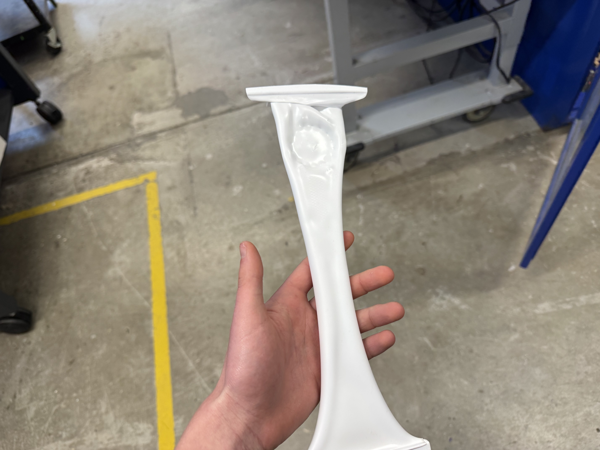
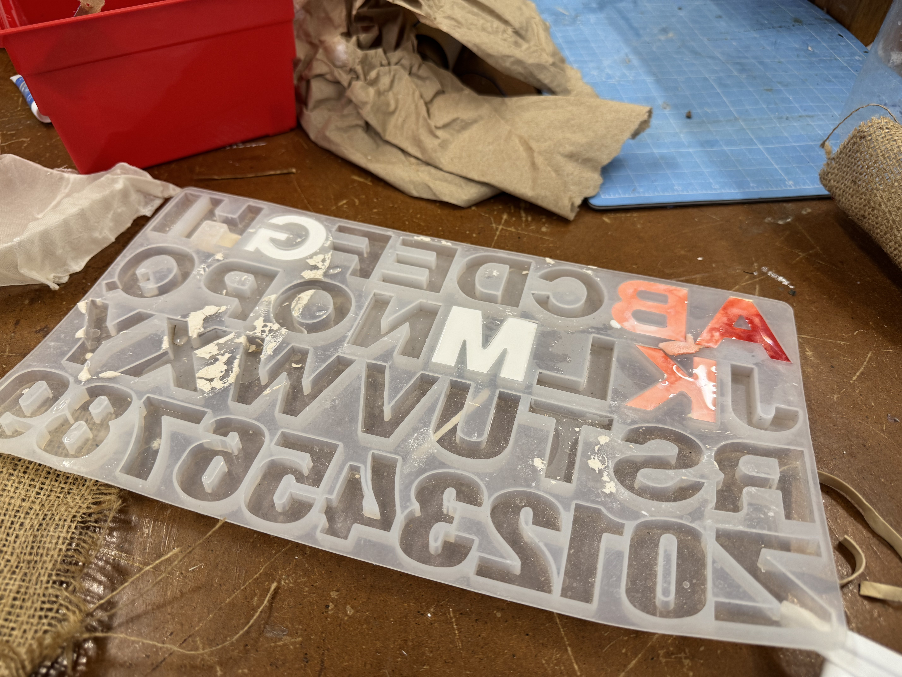

For this assignent I wanted to make a topographic map of Chicago, but making it on the CNC would've taken something like 5 hours and felt unfair to my classmates given that it was near the deadline so I switched to some vector-art to create a 3D skyscraper for my desk. Using the shopbot was pretty straightforward once I fixed the HOUR-LONG PROBLEM that I'd scaled everything in cm instead of mm. Problems included: bad aircut, 3D simulation looking funny, lots of messages about too small lines. Victor also taught me the nail gun. That was super cool!

For the second part of the assignment I visited the plastic molder. However, given that we were out of clear plastic, I had to use the white stuff. Yet, there wasn't enough for it to be held completely so I had to hold one end up to the heater with a wooden towel while the other side was locked in. In the end, I was able to make a stencil of my 3D printed gear though! (skyscraper was too big for small piece). However, I decided that since the vacuum struggled to pull the plastic tight enough to accentuate the grooves, I'd be better off using an existing mold.

Therefore, I used the existing letter molds and some food coloring to create my pieces! I'm also 3D printing the Chicago design to cast it such that I can try molding without melting plastic; the print wasn't done before class, so ill finish it this weekened. Now that I know how to use the CNC machine, I feel comfortable pursuing this process on my own when I want high-quality parts.